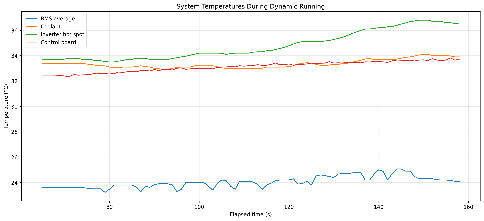
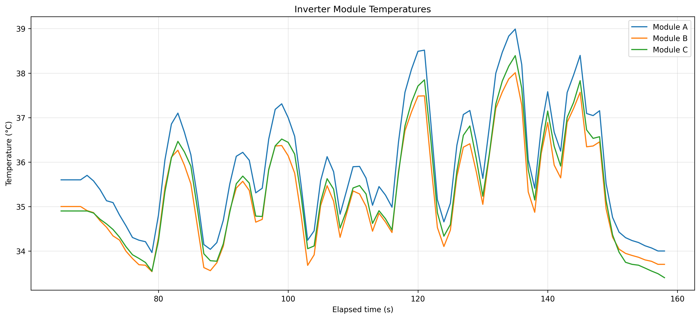
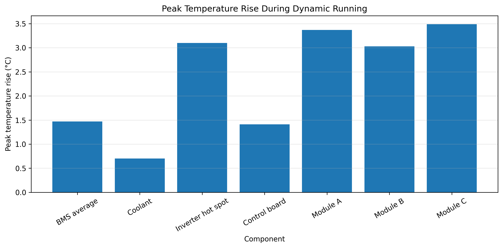
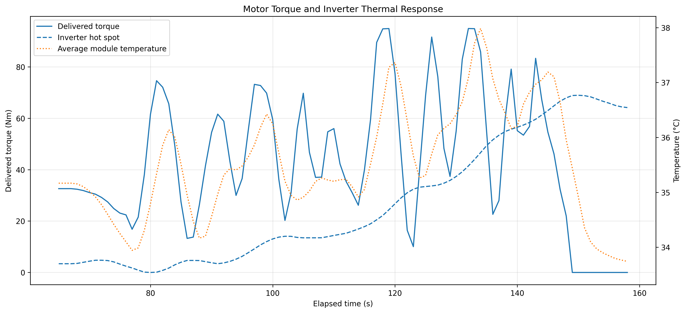

Power modules
The inverter power modules reacted quickly to changing motor load, producing repeated temperature peaks during high-demand operation.
BRUIN FORMULA RACING · CASE STUDY 03
Bruin Formula Racing — Battery, inverter, coolant, and power-module temperature analysis
This study examines how battery, inverter, coolant, and power-module temperatures changed during the dynamic portion of the logged run. The analysis compares peak temperature rise, cooling behaviour, and the different response rates of fast-heating power electronics and slower thermal systems.
Measured results
System context
The battery supplies direct-current electrical energy to the inverter. The inverter rapidly switches that DC supply into controlled three-phase current for the motor. These switching and conduction processes are not perfectly efficient, so part of the electrical energy becomes heat inside the inverter power modules and surrounding electronics.
Project question
The analysis was designed to answer three questions: which components experienced the largest short-term temperature rise, how quickly did different parts of the system respond to changing load, and did inverter temperature behaviour align with periods of repeated motor torque demand?
Analysis workflow
Use:
bms.avg_tbms.hi_tbms.lo_tinv.cool_tinv.all.hot_spot_tempinv.all.control_board_tempinv.all.module_a_tempinv.all.module_b_tempinv.all.module_c_tempinv.rpminv.tq_fbThe same dynamic-running section used in the motor analysis was selected, beginning at approximately 65 seconds and ending at approximately 158 seconds.
Temperature signals were resampled to 1 Hz because thermal behaviour changes much more slowly than the original high-frequency telemetry. Short gaps were interpolated only where appropriate.
For each component, the starting and ending temperatures were estimated using the average of the first and final five seconds. The maximum recorded value was used to calculate peak temperature rise.
Modules A, B, and C were compared individually to check whether the three power sections exhibited similar heating and cooling behaviour.
Delivered torque and thermal data were grouped by whole elapsed seconds. Torque was smoothed over three seconds, while inverter temperatures were smoothed over five seconds to make the overall load and thermal trends easier to compare.
Temperature peaks were not expected to occur at exactly the same moment as torque peaks because heat generation, conduction, sensor response, and cooling introduce a delay.

Result 01 · System temperatures
The inverter hot spot rose from 33.70°C to a peak of 36.80°C, an increase of 3.10°C. It ended at 36.58°C, retaining most of the accumulated heat near the end of the segment.

Result 02 · Inverter modules
Modules A, B, and C followed closely matched heating and cooling patterns. Their temperatures rose during repeated periods of motor demand and fell rapidly after torque demand ended.
Module A reached the highest absolute temperature at 38.99°C, while Module C showed the largest rise from its starting temperature at 3.49°C.

Result 03 · Peak temperature rise
The inverter hot spot and three power modules experienced peak rises of approximately 3.0–3.5°C. Coolant rose by only 0.70°C, while the BMS average and control board rose by approximately 1.4°C.
The faster power-module response is consistent with heat being generated directly in the high-current switching components, while coolant and battery temperatures respond more slowly because of their larger thermal mass.
| Component | Peak rise |
|---|---|
| BMS average | 1.47°C |
| Coolant | 0.70°C |
| Inverter hot spot | 3.10°C |
| Control board | 1.41°C |
| Module A | 3.37°C |
| Module B | 3.03°C |
| Module C | 3.49°C |

Result 04 · Torque and thermal response
The average inverter-module temperature generally increased after sustained high-torque periods and fell during lower-load or zero-torque operation. The inverter hot-spot temperature responded more slowly and retained accumulated heat after individual torque events had ended.
What the results show
The inverter power modules reacted quickly to changing motor load, producing repeated temperature peaks during high-demand operation.
The inverter hot spot warmed more gradually and retained most of its temperature rise near the end of the segment.
Module temperatures dropped rapidly once torque demand ended, whereas the coolant, battery, and hot-spot signals changed more slowly.
The three inverter modules followed similar temperature patterns, with only small differences in absolute temperature and peak rise.
Analysis boundary
This analysis describes short-term thermal response during a 93.6-second dynamic-running segment. It is useful for comparing component behaviour and identifying thermal lag, but it does not establish steady-state temperatures or validate reliability across a full endurance event.
Summary
The inverter power modules responded quickly to repeated motor demand, reaching peak temperature rises of approximately 3.0–3.5°C before cooling rapidly when torque demand ended. The inverter hot spot accumulated heat more gradually and retained most of its rise, while coolant and battery temperatures changed more slowly over the short dynamic segment.